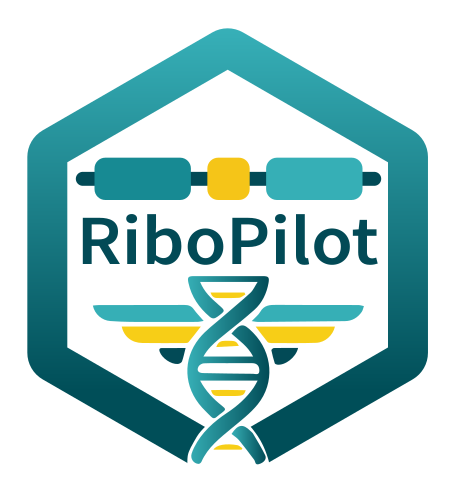
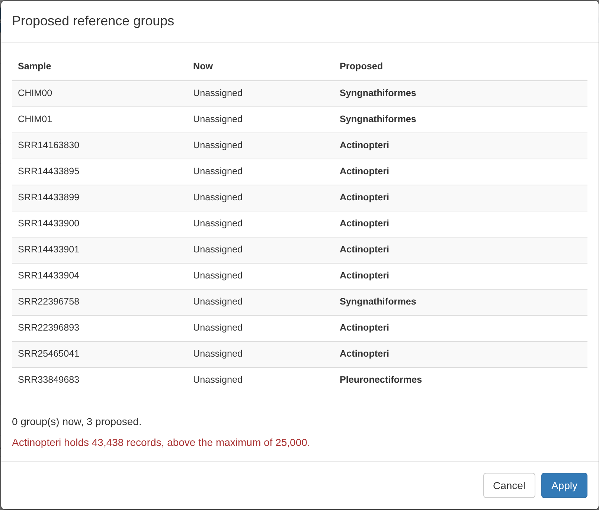
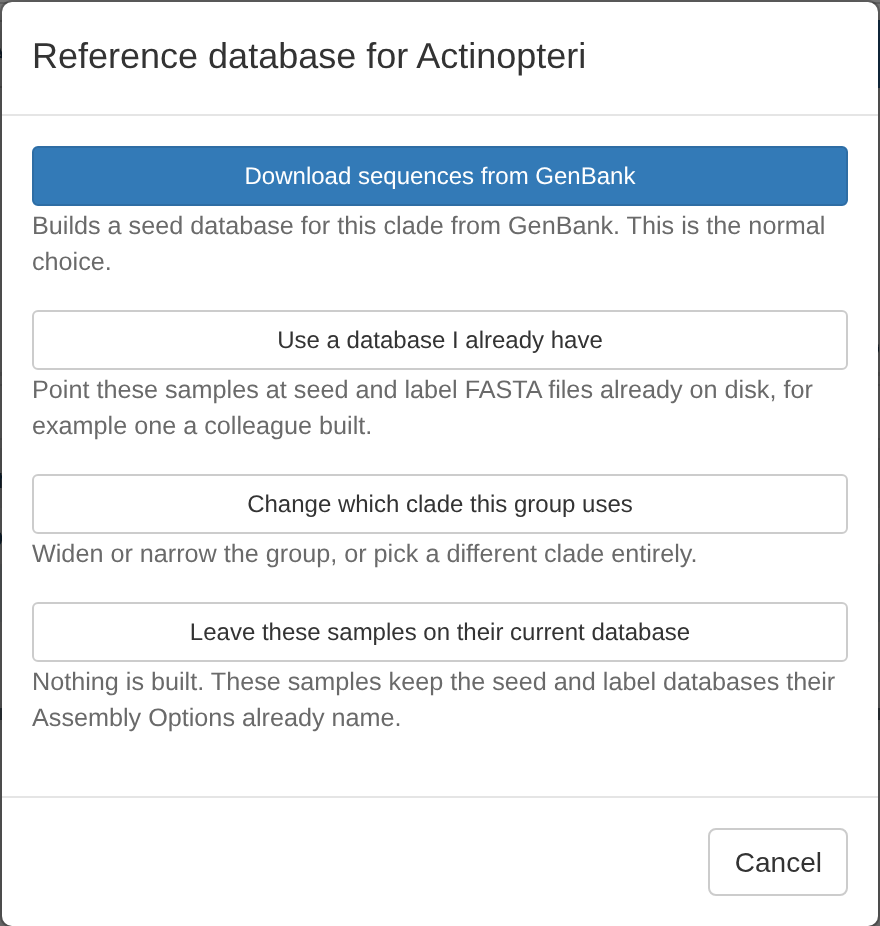
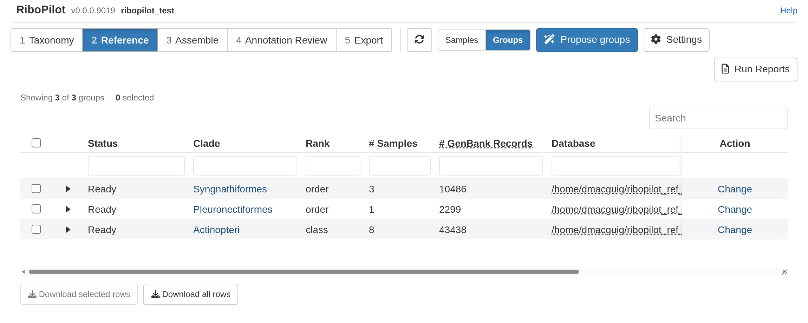

Test project: Reference
Source:vignettes/Test-Project-Reference.Rmd
Test-Project-Reference.RmdTest project: 0. Get started 1. Taxonomy 2. Reference 3. Assemble 4. Annotation Review 5. Export
To assemble a sample, RiboPilot needs a reference database of rDNA sequences from closely related organisms. This step groups samples and builds one database from GenBank per group, which can be reused across projects.
To start, click Propose groups. RiboPilot automatically groups samples that can share a database. For the test project samples it proposes three groups. The red line warns that one of them, Actinopteri (all ray-finned fishes), holds more records than the usual maximum:

Click Apply to accept the proposed groups.
You should now see a Groups table. Tick all three groups and click Set up database at the end of any ticked row. The window offers Download sequences from GenBank, Use a database I already have, and Leave these samples on their current database. With only a single group ticked, it also offers Change which clade this group uses:

Choose Download sequences from GenBank and press Run from App. The choice applies to every ticked group, so one run builds all three databases.
HYDRA Submit as job. Press Submit as job in place of Run from App; see Submit a run as a job. The app connects each database to the project once the job finishes.
When done, every group’s Status should read Ready:

In our test, the Syngnathiformes database (about 10,500 GenBank records) took under 3 minutes and Pleuronectiformes (about 2,300 records) under 1 minute. Actinopteri holds about 43,000 records, so its download takes much longer.
When working with your own samples, see Reference databases for more details.